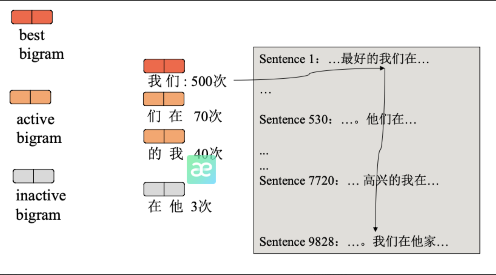

Tokenization补充
BPE利用合并规则（merge_rule）进行分词，而不是词表
BPE是遍历一遍merge_rule，在文本全局根据规则上同步修改，而不是将文本遍历一遍，挨个用规则
具体可参考下面gpt2的代码
| def bpe(self, token):
# 如果 token 已经被处理过（存在于缓存 self.cache 中），则直接返回之前的结果，避免重复计算
if token in self.cache:
return self.cache[token]
word = tuple(token) # 例如"hello" → ('h', 'e', 'l', 'l', 'o')
pairs = get_pairs(word) # {('h','e'), ('e','l'), ('l','l'), ('l','o')}
# 如果没有 bigram（即 token 长度为 1 或空），直接返回原始 token
if not pairs:
return token
while True:
# 找出当前所有 bigram 中在 self.bpe_ranks 中排名最小的（即最优先要合并的）
# self.bpe_ranks 是一个字典，保存了每个 bigram 对应的合并优先级（数值越小越优先）
# self.bpe_ranks = dict(zip(bpe_merges, range(len(bpe_merges))))
# 如果 bigram 不在 self.bpe_ranks 中，则赋予无穷大，不会优先选择它
bigram = min(pairs, key=lambda pair: self.bpe_ranks.get(pair, float("inf")))
# 如果当前 bigram 不在 BPE 合并规则中，说明无法再合并，退出循环
if bigram not in self.bpe_ranks:
break
# 把 bigram 分成两个部分：first 和 second。
# 创建一个新列表 new_word 来存储合并后的新词。
first, second = bigram
new_word = []
i = 0
# 在 word 中查找第一个出现的 first（从位置 i 开始）
# 如果找不到，就把剩下的内容加入 new_word 并跳出循环
# 如果找到了，就将 i 到 j 的内容加入 new_word，并将 i 移动到 j
while i < len(word):
try:
j = word.index(first, i)
except ValueError:
new_word.extend(word[i:])
break
else:
new_word.extend(word[i:j])
i = j
# 如果当前位置 i 是 first，且下一个字符是 second，那么合并这两个字符为 first+second，并跳过这两个字符
# 否则，按原样添加当前字符，并移动指针
if word[i] == first and i < len(word) - 1 and word[i + 1] == second:
new_word.append(first + second)
i += 2
else:
new_word.append(word[i])
i += 1
# 把新的 new_word 转成元组赋给 word
# 如果只剩一个元素（全部合并完成），终止循环
# 否则，重新获取新的 bigram 列表继续下一轮合并
new_word = tuple(new_word)
word = new_word
if len(word) == 1:
break
else:
pairs = get_pairs(word)
# 把最终结果用空格连接成字符串，如："h e ll o"
word = " ".join(word)
# 缓存这个结果以备下次使用
self.cache[token] = word
return word
|
| # case
token = "low"
self.bpe_ranks = {('l', 'o'): 1, ('o', 'w'): 2}
# 执行 bpe("low") 过程如下：
# word = ('l', 'o', 'w')
# pairs = {('l', 'o'), ('o', 'w')}
# 合并 'l'+'o' -> 'lo'
# 新词变为 ('lo', 'w')
# 再检查 bigram ('lo', 'w')，如果不在 ranks 中，停止合并
# 返回 "lo w"
|
初始化阶段
· 所有词都会被拆分成字符级别的 token（比如 "low" → ['l', 'o', 'w']）
· 统计相邻 token 对的出现频率
例如：
| low$ ← 分解为 ['l', 'o', 'w', '$']
newer$ ← 分解为 ['n', 'e', 'w', 'e', 'r', '$']
|
统计 token 对出现频率：
| TOKEN PAIR |
频率 |
| ('l', 'o') |
1 |
| ('o', 'w') |
1 |
| ('w', '$') |
1 |
| ('n', 'e') |
1 |
| ('e', 'w') |
1 |
| ('w', 'e') |
1 |
| ('e', 'r') |
1 |
| ('r', '$') |
1 |
第一次合并
找出频率最高的 token 对，比如这里所有都是 1，随机选一个，比如 ('e', 'w')。
· 把它加入合并列表 bpe_merges = [('e', 'w')]
· 创建新 token：ew
· 替换语料中所有的 'e' + 'w'为 'ew'
第二次合并
再次统计 token 对频率，此时 'e' + 'w'变成 'ew'，其他 pair 出现频率会变化。
继续选频率最高的 pair，比如可能是 ('w', 'e')或 ('ew', 'e')，具体看语料。
把这个 pair 加入 bpe_merges列表。
循环直到达到预设的合并次数或词汇量上限
最终你会得到一个有序的合并列表：
| bpe_merges = [
('e', 'w'), # 第一次合并，频率最高
('w', 'e'), # 第二次合并
('ew', 'e'), # 第三次合并
...
]
|
所以为什么越靠前的合并对频率越高？
因为 BPE 是按照以下逻辑工作的：
1.每次都选择当前频率最高的 token 对
2.进行合并后更新语料
3.再重新统计频率
4.再选择下一个频率最高的 pair
BPE最早学到的是最常用的token对（如 ('e','w')），用得最多
后面学到的是稍微少见一点的组合，因为随着token对里字符数量增加，灵活度会降低，文本相对更少见；
最后学到的可能是某些专有名词、拼写变体等低频组合。
因此，在分词时优先使用这些高频的合并规则，能更高效地压缩文本。
| self.bpe_ranks = dict(zip(bpe_merges, range(len(bpe_merges))))
|
所以BPE拿len(bpe_merges)优先级排序
BPE算法加速
传统 BPE 的痛点
每次合并操作都需要遍历所有单词的所有 bigram（二元组），时间复杂度为 O(|word| * V)（V 为词汇量）。
当数据量大时，频繁统计 bigram 频率非常耗时。
· 维护一个链表结构 ，记录每个 bigram 的出现位置和频率。
· 在合并操作时，仅更新与当前最佳 bigram 相邻的 bigram，避免全局扫描。

Bigram 分类（左上角）
Best bigram （红色）：当前最优的合并候选（频率最高）。
Active bigram （橙色）：可能参与后续合并的候选。
Inactive bigram （灰色）：已被合并或不再活跃的 bigram。
示例 bigram 及频率（中间）
| {
"我们": 500次,
"们在": 70次,
"的我": 40次,
"在他": 3次
}
|
· 这些 bigram 是从语料中统计得到的，频率越高越可能被优先合并。
句子示例（右下角）
| Sentence 1: ...最好的我们在...
Sentence 530: ...他们在...
...
Sentence 9828: ...高兴的我在... 我们在他家...
|
· 展示了 bigram 在实际文本中的分布情况，例如 "我们在" 出现在多个句子中。
算法流程详解
-
初始化 ：
以字符（字母/字）作为初始词表。
-
统计 bigram ：
扫描所有句子，统计每个 bigram 的出现频率，并记录其位置（如第 530 句的某个位置）。
-
维护 active_bigram 表 ：
仅保留那些未被合并且可能成为最佳候选的 bigram（橙色框）。
-
循环合并直到达到目标词表大小 ：
Step a : 找到频率最高的 bigram（如 "我们"），合并成新 token（如 "我们" → "我们"），并从 active_bigram 中移除。
Step b : 更新受影响的 bigram：
删除与 "我们" 相邻的旧 bigram（如 "们的" → 无效）。
新增由合并后的新 token 形成的 bigram（如 "我们的"）。
优化效果
时间复杂度降低 ：无需每次合并都重新扫描全部 bigram，仅更新局部链表。将 BPE 的时间复杂度从 $O(|word| * V) $优化到接近线性时间，极大提升了训练效率
空间换时间 ：通过维护 bigram 的位置信息，快速定位需要更新的部分。
BBPE
BBPE和BPE区别是：BPE最小词汇是字符级别，BBPE是字节级别，通过UTF-8编码表示所有字符
分词器训练方式与BPE类似:
1.构建初始词表：包含一个字节的所有表示（一个Byte的256个表示）
2.构建频率统计：统计所有子词单元对（即两个连续的子词）在文本中的出现频率
3.合并频率最高的子词对：合并出现频率最高的子词对，并更新词汇表和merge
4.重复合并步骤：不断重复步骤2和3，直到不出现有意义的合并或事达到上界
| # 使用 defaultdict 简化频率统计字典的构建，访问不存在的键时会自动初始化默认值（如 int 类型默认为 0）
from collections import defaultdict
# 示例语料
sentences = [
"我",
"喜欢",
"吃",
"苹果",
"他",
"不",
"喜欢",
"吃",
"苹果派",
"I like to eat apples",
"She has a cute cat",
"you are very cute",
"give you a hug",
]
# 初始词汇表包含所有 256 个字节值（0x00 到 0xFF），这是字节级 BPE 的基础
initial_vocab = [bytes([byte]) for byte in range(256)]
vocab = initial_vocab.copy()
# 存储合并规则
merge_rules = []
print("初始词汇表:", initial_vocab)
# 将句子编码为 UTF-8 字节序列（如“我”编码为 b'\xce\xd2'），统计每个字节的频率
def build_stats(sentences):
stats = defaultdict(int)
for sentence in sentences:
# 将句子编码为UTF-8字节
symbols = sentence.encode("utf-8").split()
for symbol in symbols:
stats[symbol] += 1
return stats
stats = build_stats(sentences)
# 每个单词的初始分割为单字节列表（如 b'apple' 分割为 [b'a', b'p', b'p', b'l', b'e']）
splits = {word: [bytes([byte]) for byte in word] for word in stats.keys()}
# 统计相邻字节对的出现频率（如 b'a' 和 b'p' 的频率），这是 BPE 合并高频对的基础
def compute_pair_freqs(splits):
pair_freqs = defaultdict(int)
for word, freq in stats.items():
split = splits[word]
if len(split) < 2:
continue
for i in range(len(split) - 1):
pair = (split[i], split[i + 1])
pair_freqs[pair] += freq
return pair_freqs
# 遍历所有单词，将匹配的字节对替换为合并后的新字节
def merge_pair(pair, splits):
merged_byte = b''.join(pair)
for word in stats:
split = splits[word]
if len(split) < 2:
continue
i = 0
while i < len(split) - 1:
if split[i:i+2] == list(pair):
split = split[:i] + [merged_byte] + split[i + 2:]
else:
i += 1
splits[word] = split
return splits
# BPE主过程核心逻辑：重复合并最高频字节对，直到词汇表达到目标大小
def byte_level_bpe(sentences, initial_vocab, target_vocab_size=50):
vocab = initial_vocab.copy()
merge_rules = []
stats = build_stats(sentences)
splits = {word: [bytes([byte]) for byte in word] for word in stats.keys()}
while len(vocab) < target_vocab_size:
pair_freqs = compute_pair_freqs(splits)
if not pair_freqs:
print("没有更多的字节对可以合并。")
break
# 找到频率最高的字节对
best_pair, max_freq = max(pair_freqs.items(), key=lambda x: x[1])
if max_freq < 1:
print("最高频率的字节对频率小于1，停止合并。")
break
# 合并字节对
splits = merge_pair(best_pair, splits)
# 创建新的子词单元
new_unigram = b''.join(best_pair)
# 添加合并规则
merge_rules.append((best_pair, new_unigram))
# 更新词汇表
vocab.append(new_unigram)
print(f"合并字节对: {best_pair} -> {new_unigram}")
print(f"当前词汇表大小: {len(vocab)}")
return vocab, merge_rules
# 输出最终词汇表和合并规则，用于后续的文本编码
vocab_size = 260
vocab, merge_rules = byte_level_bpe(sentences, initial_vocab, target_vocab_size=vocab_size)
print("\n最终词汇表:", vocab)
print("\n合并规则:")
for i, rule in enumerate(merge_rules, 1):
print(f"{i}: {rule[0]} -> {rule[1]}")
|
WordPiece
WordPiece的核心思想是将单词拆分为多个前缀符号（比如BERT中的##）最小单元，再通过子词合并规则将最小单元进行合并为子词级别。
例如对于单词“word”，拆分如下：
计算过程绝大部分与BPE一致，
将挑选bigram的指标从频率换成了PMI（衡量两个事物之间的相关性，比如两个词）
PMI
\(PMI(a,b)=\frac{P(ab)}{P(a)P(b)}\)，其中a和b为相邻的子词
如果x跟y不相关，则\(p(xy)=p(x)p(y)\)。二者相关性越大，则\(p(x,y)\)相比于\(p(x)p(y)\)越大。
\(\frac{p(x|y)}{p(x)}\)表示x跟y的相关程度,因为条件概率越大，关联性就越高（指正相关）。
原本的PMI公式如下：
\[PMI(a,b)=log\frac{P(ab)}{P(a)P(b)}=log\frac{P(a|b)}{P(a)}=log\frac{P(b|a)}{P(b)}\]
这里的log来自于信息论的理论，当对p(x)取log之后就将一个概率转换为了信息量（要再乘以-1将其变为正数），以2为底时可以简单理解为用多少个bits可以表示这个变量。
不过在分词方面，就不需要加log了，因为表示的不是信息量
点互信息PMI其实就是从信息论里面的互信息这个概念里面衍生出来的。
其衡量的是两个随机变量之间的相关性，即一个随机变量中包含的关于另一个随机变量的信息量。
所谓的随机变量，即随机试验结果的量的表示，可以简单理解为按照一个概率分布进行取值的变量，比如随机抽查的一个人的身高就是一个随机变量。
互信息其实就是对X和Y的所有可能的取值情况的点互信息PMI的加权和，而点互信息只是对其中两个点进行相关性判断。
算法过程
- 计算初始词表：通过训练语料获得或者最初的英文中26个字母加上各种符号以及常见中文字符，这些作为初始词表。
- 计算合并分数（PMI）：对训练语料拆分的多个子词单元通过合拼规则计算合并分数。
- 合并分数最高的子词对：选择分数最高的子词对，将它们合并成一个新的子词单元，并更新词表。
- 重复合并步骤：不断重复步骤 2 和步骤 3，直到达到预定的词表大小、合并次数，或者直到不再有有意义的合并（即，进一步合并不会显著提高词表的效益）。
- 分词：使用最终得到的词汇表对文本进行分词（注意是利用词汇表，对比BPE）。
注意代码相比BPE，WordPiece只需要修改合并分数的计算即可：
| while len(vocab) < target_vocab_size:
# 统计新词表导致的bigram频率
bigram_score = get_pmi(word_freq)
# 找到分数最高的bigram
best_bigram = argmax(bigram_score)
# 新词为分数最高的bigram连接
new_unigram = ''.join(best_bigram)
# 对词频表中每个词应用best bigram的合并
word_freq = merge_bigram(best_bigram, new_unigram, word_freq)
# 添加合并规则、添加新词
merge_rule.append({best_bigram -> new_unigram})
vocab.append(new_unigram)
|
WordPiece如何分词
相比于BPE是使用merge_rule进行合并，WordPiece使用的就是前向最大匹配法进行进行vocab匹配，参考bert的分词方法
| class WordpieceTokenizer:
# vocab：词汇表（dict 或 set），包含所有合法的子词单元（如 "un"、"##aff" 等）
# unk_token：表示未知词的标记（如 "[UNK]"），当无法分割某词时返回此标记
# max_input_chars_per_word：单个词的最大字符数限制，默认为 100，防止过长字符串导致性能问题
def __init__(self, vocab, unk_token, max_input_chars_per_word=100):
self.vocab = vocab
self.unk_token = unk_token
self.max_input_chars_per_word = max_input_chars_per_word
# 功能 ：将输入文本分词为 WordPiece 子词单元。
# output_tokens：存储最终的子词列表
# 对输入文本调用 whitespace_tokenize
```
def whitespace_tokenize(text):
"""Runs basic whitespace cleaning and splitting on a piece of text."""
text = text.strip() # 例如将 " Hello world! " 转换为 "Hello world!" ，移除文本开头和结尾的空白字符
。
if not text:
return [] # 如果清理后的文本为空字符串（如原始文本仅包含空白符），则直接返回空列表
tokens = text.split() # "The sunshine is nice" 会被分割为 ["The", "sunshine", "is", "nice"]。此方法会自动忽略连续的空白符
return tokens
```
# 将每个词元转换为字符列表 chars
# 若字符数超过 max_input_chars_per_word，直接标记为未知词 unk_token 并跳过后续处理
def tokenize(self, text):
output_tokens = []
for token in whitespace_tokenize(text):
chars = list(token)
if len(chars) > self.max_input_chars_per_word:
output_tokens.append(self.unk_token)
continue
# 核心逻辑 ：使用贪心最长匹配优先算法分割子词
# 如果 start > 0（非词首子词），则添加前缀 "##"（如 "##aff"）
# 若找到匹配的子词（substr in self.vocab），记录并移动 start 到 end
# 若找不到任何子词匹配，标记 is_bad=True 并终止循环
is_bad = False
start = 0
sub_tokens = []
while start < len(chars):
end = len(chars)
cur_substr = None
while start < end:
substr = "".join(chars[start:end])
if start > 0:
substr = "##" + substr
if substr in self.vocab:
cur_substr = substr
break
end -= 1
if cur_substr is None:
is_bad = True
break
sub_tokens.append(cur_substr)
start = end
# 若分割失败（is_bad=True），将整个词标记为 unk_token
# 否则，将子词列表 sub_tokens 添加到最终结果中
# 示例 ：输入 "unaffable" 会被分割为 ["un", "##aff", "##able"]
if is_bad:
output_tokens.append(self.unk_token)
else:
output_tokens.extend(sub_tokens)
return output_tokens
|
unigram
BPE 和 WordPiece 的选词目标都是贪心的，即某个词在语料库中的频率或 PMI。
Unigram 考虑选不选某个词对于整个语料库切词结果的影响。
训练目标：找到一个词表 vocab，该词表在语料库上的（最优）切分的指标是所有词表里最优的。
最优指标：
假设句子 s 被切分成\(x_1, x_2, \ldots, x_k\)
\(\underset{\text{vocab}}{\text{Argmin}} \sum_{s \in \text{Corpus}} \underset{(x_1, \ldots, x_k) \in \text{Segment}(s, \text{vocab})}{\text{Min}} \text{UnigramPPL}(s)\)
即找到一个 vocab 使得语料中的每一个句子的 PPL 之和最小！
UnigramPPL (Perplexity) 定义：
\(\begin{align*}\text{UnigramPPL}(s) &= -\log(P(s)) &= -\log(\prod_{x_i} P(x_i)) &= \sum_{x_i} -\log(P(x_i))\end{align*}\)
最优指标
把句子 s 切成好多部分 ，像\(x_1, x_2, \ldots, x_k\) 。
要找到一个词表 vocab，让语料库 Corpus 里每个句子按照这个词表切分后的 UnigramPPL（困惑度 ）之和最小。
UnigramPPL 就是用来衡量句子概率的一种方式，公式 \(-\log(P(s))\) ，P (s) 是句子 s 出现的概率 ，通过对数运算转化 ，还可以写成 \(-\log(\prod_{x_i} P(x_i))\) ，进一步变成 \(\sum_{x_i} -\log(P(x_i))\) ，
就是把句子里每个部分概率的对数加起来 。
算法步骤
先把所有的 ngram（n 个词组合在一起的片段 ，n 是提前定好的 ）都当作词表 vocab 的内容，然后统计这些 ngram 出现的频率 。
把这些频率转化成 \(-\log P(\text{ngram})\) 。
代码上就是，只要词表 vocab 的大小比目标大小大，就循环：对词表里每个 ngram，先算出当前词表的 PPL（PPL_0 ） ；
再对每个 ngram，去掉它得到新的词表 new_vocab，算出新的 PPL（PPL_new ） ，得到 PPL 的增加值（PPL_increase ） ；然后把让 PPL 上升值最小的那个 ngram 扔掉，最后重新计算每个 ngram 的频率 。
例子
假设我们有一个简单的语料库，包含以下三个句子：
“我 喜欢 苹果”
“你 喜欢 香蕉”
“他 喜欢 橙子”
- 初始准备
我们先确定 n = 1（也就是单个词作为 ngram ），把所有出现的单个词 “我”“喜欢”“苹果”“你”“香蕉”“他”“橙子” 都作为初始词表 vocab 。
然后统计它们的频率：
“我” : 1
“喜欢” : 3
“苹果” : 1
“你” : 1
“香蕉” : 1
“他” : 1
“橙子” : 1
接着按照算法，将频率转化为 \(-\log P(\text{ngram})\) 。这里假设每个词出现的概率是其频率除以总词数（总词数是 9 ） ，比如 “我” 的概率是 \(1/9\) ，那么 \(-\log(1/9) \approx 2.197\) 。
- 迭代过程
假设我们目标词表大小是 5 ，当前词表大小是 7 ，大于目标大小，开始迭代：
对于词表中的每个 ngram，先计算当前词表的 PPL（PPL_0 ） ，这一步比较复杂，要根据前面说的 UnigramPPL 公式，结合每个句子切分后的词的概率来计算 。
然后对于每个 ngram，比如先看 “我” ，去掉 “我” 得到新的词表 new_vocab ，再计算新的 PPL（PPL_new ） ，算出 PPL 的增加值（PPL_increase ） 。把每个 ngram 都这样操作一遍 。
发现去掉 “你” 和 “他” 时 PPL 上升值相对最小（假设 ），就把 “你” 和 “他” 扔掉 。
重新计算剩下词 “我”“喜欢”“苹果”“香蕉”“橙子” 的频率 ，因为语料库句子切分情况变了 ，比如 “喜欢” 频率可能就变成 \(3/7\) ，再重新计算 \(-\log P(\text{ngram})\) 。
- 结束条件
不断重复上述过程，直到词表大小等于目标大小 5 ，这时得到的词表就是经过 Unigram 算法优化后的词表 ，用这个词表对语料库切词，
能让句子的 UnigramPPL 之和相对最小 ，也就是切分效果在这个标准下是比较优的 。
| While词表大小|vocab|>目标大小
for ngram in vocab:
# 计算扔掉ngram的PPL上升值
PPL_0 = compute_ppl(vocab)
for ngram in vocab:
new_vocab = vocab.remove(ngram)
PPL_new = compute_ppl(new_vocab)
PPL_increase = PPL_new - PPL_0
扔掉PPL上升值最小的ngram
重新计算每个ngram的frequency
|
BPE 的分词器在应用中是使用正向最大匹配进行分词吗？
分词 Tokenization 中 BPE 部分讲解 BPE 进行分词的过程讲解，并不是基于词表，而是基于 merge_rule 分词的。
可以参考模型中 merge.txt 里面储存的就是规则，https://huggingface.co/Qwen/Qwen2-VL-7B-Instruct/raw/main/merges.txt，并且这个文件中 rule 的顺序就是代表分词的优先级
BPE 与 WordPiece 有什么区别？
合并分数低计算方法不同，BPE 计算的是词频，WordPiece 用的是 PMI。
如果一个词的各组成部分是常见的，WordPiece 倾向于不合并：
例如 我是 虽然出现次数很多，但是 我，是 本身频率很高，WordPiece 倾向于不合并。
应用方式不同，BPE 是用 merge_rule 全局遍历匹配，WordPiece 是贪心前向最大匹配。
GPT2 使用 BBPE，Bert 使用 WordPiece。